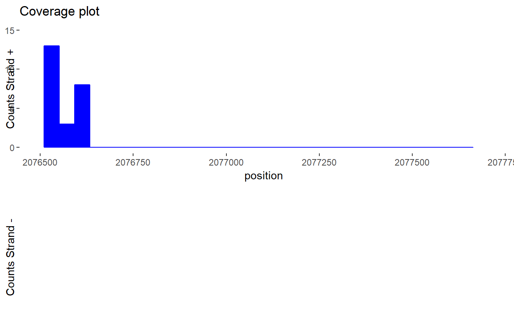
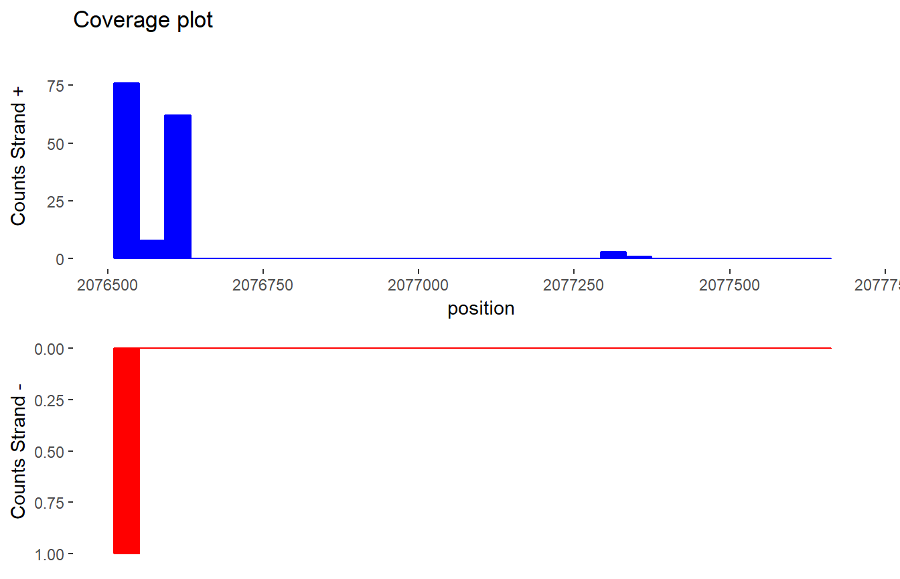
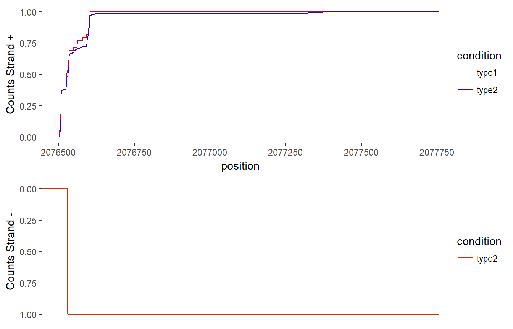

directRNAExplorer - functionalities
Aleksandra Grudziaz
2018-04-20
Package_presentation.Rmd.bam to .rda conversion
For conversion from .bam format to .rda we can use the bamToR() function. This function uses a Rsamtools package from the Bioconductor, so we have to load this package before.
library(Rsamtools)
library(directRNAExplorer)bamData <- bamToR("P13.2016-11-17T16_40_36.1234062861011.fc1.ch1.sorted.bam")We have to remember that we should set path to a directory containing this bam file.
Counts per gene
Using frame created above we can find out, for each gene, how many nucleotides were recorded during the sequencing. For genes aggrergation we use the TAIR10_genes data. In my examples I use data for first chromosome.
datawt <- dataChromosome1
databrm <- brmDataChromosome1head(datawt)
#> DataFrame with 6 rows and 13 columns
#> qname flag rname strand pos qwidth mapq
#> <character> <integer> <factor> <factor> <integer> <integer> <integer>
#> 1 70661909252085 16 1 - 2001464 21 255
#> 2 70646155445083 16 1 - 2001594 23 255
#> 3 70657379404766 16 1 - 2002661 29 255
#> 4 70643789860258 16 1 - 2002663 26 255
#> 5 70652883110414 16 1 - 2002664 25 255
#> 6 70657379411167 16 1 - 2002666 24 255
#> cigar mrnm mpos isize seq
#> <character> <factor> <integer> <integer> <DNAStringSet>
#> 1 1M1D13M1D7M NA 0 0 GTTATCTTTTTTTTTTTATCT
#> 2 6M1D1M2D16M NA 0 0 TTTCTGTTTTTTCTCGCTGTTGC
#> 3 1M1D28M NA 0 0 TTTATGTGCT...GATTGGTTTC
#> 4 16M2D5M1D4M1D1M NA 0 0 TTATGTGCTT...GATTGTTTCC
#> 5 1M1D24M NA 0 0 TTGTGCTTGA...TGATTGGTTT
#> 6 24M NA 0 0 TGTGCTTGAG...TGATTGGTTT
#> qual
#> <PhredQuality>
#> 1 .....................
#> 2 .......................
#> 3 .......................
#> 4 .......................
#> 5 .......................
#> 6 .......................genesSummary <- genesSummarize(datawt, chromosome = 1)
genesSummary <- dplyr::arrange(genesSummary, desc(counts))
head(genesSummary)
#> name counts uniqueCounts length
#> 1 AT1G01010 0 0 2268
#> 2 AT1G01020 0 0 2809
#> 3 AT1G01030 0 0 2065
#> 4 AT1G01040 0 0 8081
#> 5 AT1G01046 0 0 206
#> 6 AT1G01050 0 0 1983Comparision between two groups
We can compare the distribution of counts between two genes or part of the gene (for example three prime UTR, exons). We also can compare distributions between positive or negative strands. We can use for this comparision for example the two-sample Kolmogorov-Smirnov test. In next example I will use the data for gene “AT1G06680”.
ksDistributionTest(datawt, databrm, "AT1G06760")
#>
#> Two-sample Kolmogorov-Smirnov test
#>
#> data: dt_neg[dt_neg$condition == "type1", "position"] and dt_neg[dt_neg$condition == "type2", "position"]
#> D = 0.079927, p-value = 0.9829
#> alternative hypothesis: two-sidedFor selected parts of chromosomes in two groups we can compute the table with p-values for chosen test about their distributions.
table <- pvalTable(datawt, databrm, chromosome="1", type ="KS")
head(dplyr::arrange(table, pval),6)
#> gene pval statistic
#> 1 AT1G06720 0.02736573 0.45174825
#> 2 AT1G06630 0.07844748 0.40079365
#> 3 AT1G06590 0.08502377 0.50000000
#> 4 AT1G06730 0.16083539 0.50000000
#> 5 AT1G06690 0.17340708 0.19909688
#> 6 AT1G06680 0.24452875 0.03018483Coverage plot
For chosen gene we can draw a coverage plot for datawt and databrm. First we have plots for the three prime UTR.
plotGeneDistribution(gene="AT1G06760", bamDataFrame=datawt)
plotGeneDistribution(gene="AT1G06760", bamDataFrame=databrm)
And plots for whole gene.
plotGeneDistribution(gene="AT1G06760", bamDataFrame=datawt)
plotGeneDistribution(gene="AT1G06760", bamDataFrame=databrm)
We can also see the distribution of these two samples on one plot.
{r, fig.width=7} # plotGeneComparisonDistribution("AT1G06760", datawt, databrm) #
In this case red color lines correspond to data from first dataset and blue - to second.
We can also see the ecdf of these two samples on one plot.
plotGeneComparisonDistribution("AT1G06760", datawt, databrm,stat="ecdf")
Testing counts in genes
For two types of individuals we can compute negative binomial test to find significantly changed genes between one and the other type.
Table of counts
Firstly, we have to compute, from sequencing data, the table of counts for each gene from Arabidopsis. We can create this table using countsForAllGenes function.
counts_genes_wt1 <- countsForAllGenes(dataChromosome1, geneData = directRNAExplorer::Araport11, genePart="gene")Testing
To test differences between types of individuals we must compute at least two counts tables. One for the first type, and then for the second type. I’ve create a table contains inforamation for two types - wild type and a mutant type (brm). We have seven samples in our test.
allCounts <- directRNAExplorer::countsAllChoice of counts
We want to test these genes which could be significant. Firstly, we should select genes which have “good number” of counts. We assumed that the counts are “good” if more than at least 2 samples in the wt case and at least 3 samples in brm case we have more than 9 counts for gene. In addition, we are looking for such genes that have many counts in one of the subtypes, and almost zero in the second one.
genesTest <-c()
countsWithCondition <- allCounts
for(i in 2:ncol(allCounts)){
countsWithCondition[,i] <- ifelse(allCounts[,i]>=9, 1, 0)
}
allCounts_2 <- countsWithCondition
genes <- allCounts_2[,1]
allCountsTransposed <- t(allCounts_2[,-1])
allCountsTransposed <- data.frame(allCountsTransposed)
colnames(allCountsTransposed)<- genes
allCountsTransposed$type <- c(rep("wt", 3), rep("c", 4))
allCountsTransposed <- allCountsTransposed[,c(ncol(allCountsTransposed), 1:(ncol(allCountsTransposed)-1))]
sums <- aggregate(. ~ type, data=allCountsTransposed, FUN=sum)
for(i in 2:ncol(allCountsTransposed)){
if(((sums[1,i]>=3) & (sums[2,i]>=2)) || ((sums[1,i]>=3) & (sums[2,i]==0))||((sums[1,i]==0) & (sums[2,i]>=2))){
genesTest[i] <- colnames(allCountsTransposed)[i]
}else{
genesTest[i] <- NA
}
}
genesTest2<- na.omit(genesTest)
countsTest <- allCounts
countsTest <- countsTest[which(countsTest$name %in% genesTest2),]
countsTest2 <- data.frame(t(countsTest[,-1]))
colnames(countsTest2) <- countsTest$namenbinom test
For selected genes we perform a binomial negative test, in order to find genes for which the number of readings has changed significantly divided into two groups - wt and brm.
cond <- c(rep("wt", 3), rep("c", 4))
test<-nbinomTest(countsTest2, condition = cond)To find the most changed genes, we will focus only on those that have a small pvalue and fold greater than 1.5.
library(dplyr)
testFiltered <- filter(test, pvalue<0.05)
testFiltered <- filter(testFiltered, abs(log2FoldChange)>0.6)
testFiltered <- arrange(testFiltered, pvalue)
testFiltered <- arrange(testFiltered, desc(log2FoldChange))
head(testFiltered)
#> baseMean log2FoldChange lfcSE stat pvalue
#> 1 33.386784 4.166556 0.4017215 10.371754 3.333487e-25
#> 2 6.596427 3.058755 0.6610824 4.626889 3.712002e-06
#> 3 18.217809 3.037973 0.4748173 6.398193 1.572260e-10
#> 4 446.422432 2.889503 0.1256007 23.005469 4.109286e-117
#> 5 40.056709 2.883768 0.2812684 10.252726 1.150523e-24
#> 6 26.215771 2.514303 0.3960365 6.348666 2.171903e-10
#> padj id
#> 1 2.804296e-22 AT3G01345
#> 2 2.342041e-04 AT1G47580
#> 3 2.834280e-08 AT1G53480
#> 4 4.148324e-113 AT2G42540
#> 5 8.934253e-22 AT1G22690
#> 6 3.716164e-08 AT4G15490